Deskripsi
Gemini cenderung cerdas, sosial, dan komunikatif. Gemini juga merupakan individu yang bersifat fleksibel. Dan sesuai dengan lambang mereka yang merupakan anak kembar, mereka cenderung memiliki kepribadian ganda dan sulit diprediksi.
Kompatibel
Zodiak yang cocok dengan gemini ialah Aquarius dan Libra. Karena kedua nya berbagi rasa peduli sosial serta komunikatif yang sama, mereka cocok 80-90%. Sedangkan gemini sangat tidak cocok dengan Virgo dan Scorpio. Dikarenakan Virgo yang kritis dan analitis, juga Scorpio yang berkepribadian kuat dan intens. Persentase kecocokan mereka hanya mencapai 20%
Tokoh Zodiak
Afgan
27 Mei

Lyodra
21 Juni

John F Kennedy
29 Mei